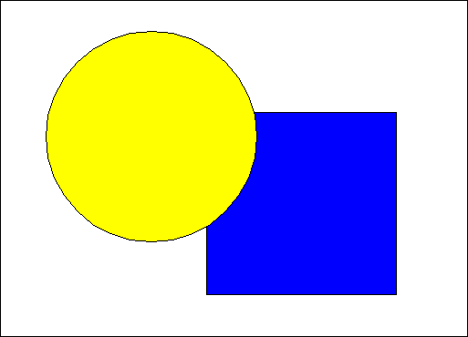

When using FM_OVERPAINT, the foreground of the primitive replaces any existing drawing in the same area of the presentation page. If the existing drawing is yellow, for example, and the new drawing is red, the drawing is red at the points of overlap. (This is the default foreground mix attribute.) Because one color is replacing another and no color mixing is being performed, the effects of the overpaint mix attribute are entirely predictable. This is shown in the following figure.
Overpaint Foreground Mix Attribute
The circle is drawn on top of the square. At the points of overlap, the output is the color of the circle.
When using BM_OVERPAINT, the primitive background replaces the existing
drawing. drawing, as shown in the following figure.
Overpaint Background Mix Attribute
Using BM_OVERPAINT, the background of the primitive is apparent only if it is drawn in a different color from the output-area background. Notice that, in this example, the foreground mix attribute is FM_OVERPAINT.